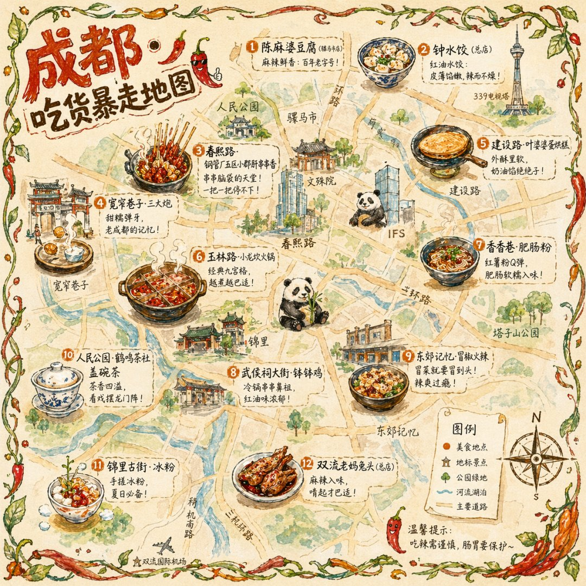

AI海报插画提示词
Chengdu Food Map Illustration
这是一个可参考的 AI 生图提示词案例，适合回到 LOAT 生成器中按主体、风格、比例和用途继续改写。
案例信息
分类：AI海报插画提示词
图片尺寸：1080 × 1080
作者/来源：Panda20230902 · 来源链接
提示词
一张手绘风格的城市美食地图，以成都为主题。画面以鸟瞰视角的手绘简化城市地图为底，标注主要道路和地标但不追求精确比例而是追求可爱的手绘感。地图上分布着 12 个美食地点的精致手绘小插画：春熙路的串串香（一把竹签插着各种食材冒着热气）、宽窄巷子的三大炮（三个糯米团子飞向铜盘）、建设路的蛋烘糕（金黄酥脆正在翻面）、玉林路的火锅（九宫格锅翻滚冒泡）等，每个插画约占地图的 5% 面积，旁边用手写体标注店名和一句推荐语"凌晨两点还在排队的那家"。地图边缘用手绘藤蔓和辣椒装饰形成边框。右下角有一个手绘指南针和图例说明。左上角标题"成都·吃货暴走地图"使用胖圆的手绘美术字配辣椒装饰。整体画风为水彩+彩铅混合的手绘质感，颜色以暖色系（辣椒红、姜黄、翠绿）为主，图片比例 1:1。
改写建议
替换主体
保留构图和风格，替换人物、产品、场景或品牌元素。
调整比例
头像可改为 1:1，短视频封面可改为 9:16，横幅可改为 16:9。
减少不确定词
如果结果不稳定，减少过多形容词，优先写清主体、光线和用途。